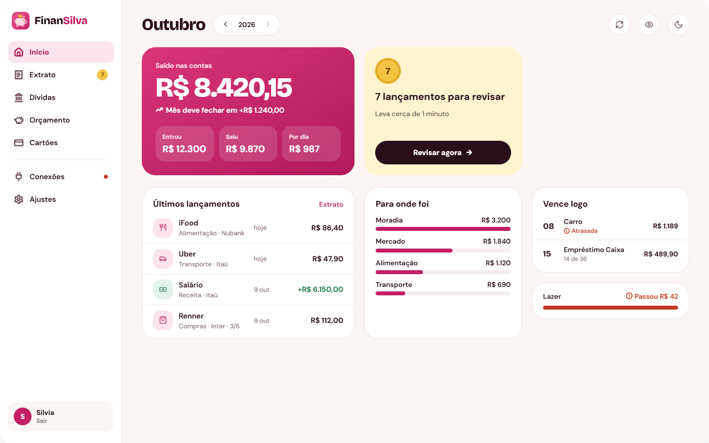
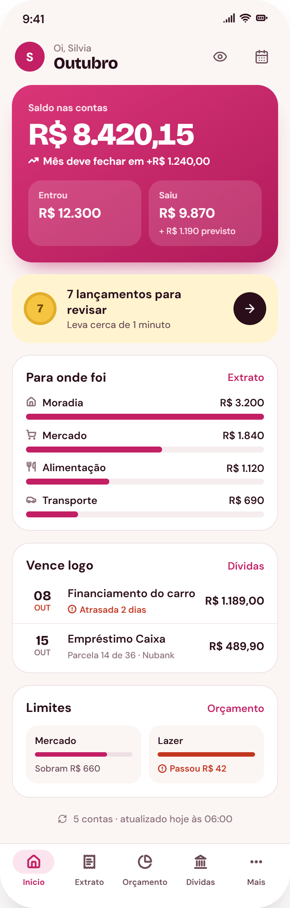
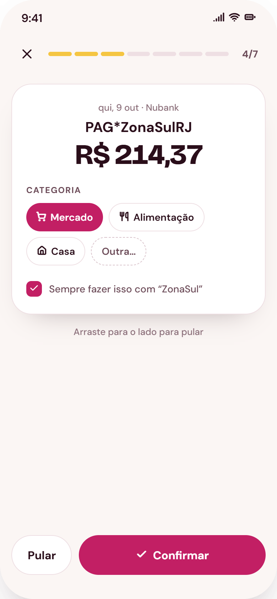
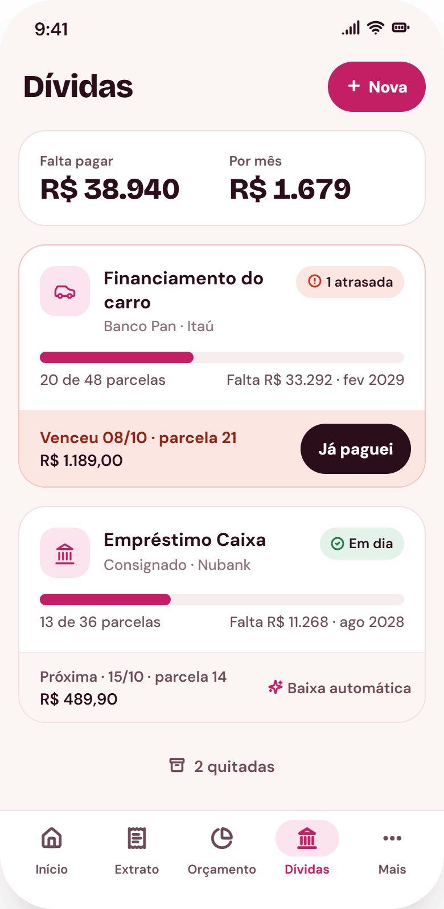
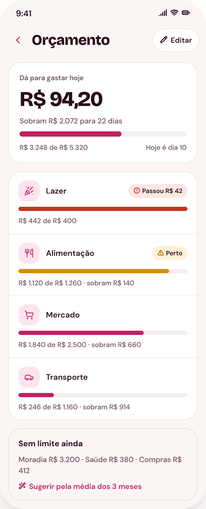

App de finanças da casa. Lê as contas e os cartões de cada pessoa pelo Open Finance e mostra, num lugar só, onde o dinheiro entra, onde sai, as dívidas, o orçamento e o que já está comprometido no mês.

O dinheiro de uma casa fica espalhado: cada pessoa tem os seus bancos e os seus cartões, e as parcelas e os empréstimos moram em aplicativos diferentes. Para saber quanto sobra no mês, alguém precisa abrir tudo e somar.
O FinanSilva faz essa soma sozinho. Cada pessoa conecta os próprios bancos (o app só lê, não movimenta), os lançamentos chegam todo dia e a casa enxerga um quadro único. Comecei a construir para usar em casa, e hoje o app atende várias casas, com acesso só por convite.
É um PWA: abre no navegador e pode ser instalado na tela inicial, com entrada por digital ou rosto e avisos de vencimento.




Monorepo em TypeScript com quatro pacotes, no estilo Clean Architecture. A dependência só anda em um sentido: de fora para dentro.
apps/webNext.js 16 (App Router): telas, ações do servidor, rotas de API, sessão e PWA.
packages/infrastructureImplementa as portas: Prisma com MongoDB, Pluggy (Open Finance), WebAuthn, Web Push, cifra, e-mail e um banco em memória para o modo demonstração e os testes.
packages/applicationCasos de uso e portas. Só fala com o mundo por interfaces: repositórios, provedor bancário, relógio, enviador de avisos.
packages/domainTipos e funções puras: dinheiro em centavos, faturas, parcelas, orçamento, previsão do mês. Não conhece banco de dados, framework nem relógio.
Na prática, isso deixa as regras de dinheiro testáveis sem subir nada: o domínio recebe a data de hoje por parâmetro, e os casos de uso rodam nos testes sobre o banco em memória. Sem a variável do banco, o app inteiro abre em modo demonstração, com dados fictícios.
Todas as casas usam o mesmo app e o mesmo banco de dados. O isolamento é a regra mais importante do sistema e não depende de ninguém lembrar de filtrar: há três camadas, e as três precisam falhar juntas para um dado vazar.
Os testes atacam isso de propósito. Cada ação do servidor tem ao menos um ataque escrito (sessão de uma casa usando identificadores de outra), e uma ação nova sem ataque faz a suíte falhar. Cada método de repositório tem um caso no contrato de isolamento, que roda contra a memória, contra o Prisma simulado e contra um MongoDB de verdade.
A conexão é pelo Open Finance (Pluggy), só de leitura. Cada pessoa usa a própria chave, guardada cifrada com AES-256-GCM.
Não existe cadastro aberto. O convite é um link de uso único, e a casa de destino nunca vem de formulário.
Cookie httpOnly com versão de sessão: trocar a senha ou pedir "sair de todos os aparelhos" derruba as sessões abertas.
Entrada com digital ou rosto por passkeys (WebAuthn), com desafio assinado, de cinco minutos e de uso único.
Mesma frase e mesmo tempo de resposta para e-mail cadastrado ou não, com limite de tentativas guardado no banco.
O painel de quem administra mostra só nomes e contagens. Nenhum valor ou descrição de lançamento chega a ele.
Uma rotina diária percorre as casas e dispara a atualização de cada uma em separado, e um aviso do provedor (webhook) adianta a atualização quando o banco tem novidade. A cada sincronização o app:
São mais de cem arquivos de teste em Vitest, divididos pelas camadas: regras puras no domínio, casos de uso sobre o banco em memória, adaptadores com serviços simulados, e ações e rotas do servidor. Antes de publicar, um roteiro abre todas as telas no build de produção em modo demonstração e confere as rotas internas e as páginas públicas.
O que ainda depende de aparelho de verdade está escrito na documentação do projeto: biometria, avisos no celular e a janela de conexão com o banco.
O código é privado, porque o app está em uso com dados financeiros de verdade. Posso apresentar o repositório e a documentação em uma conversa.